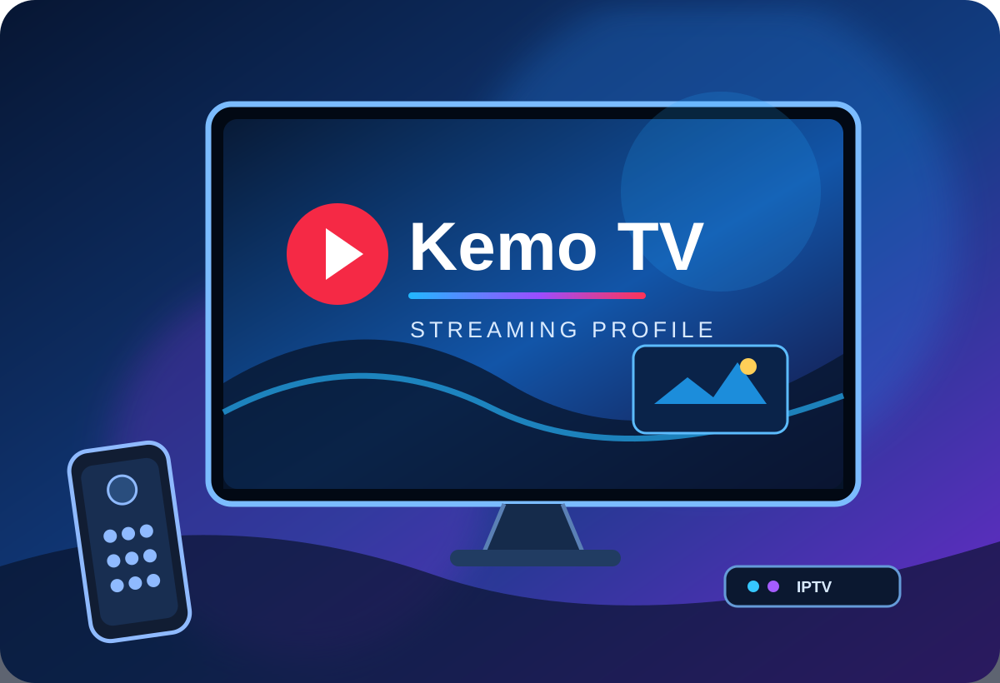

Live TV channels
Advertised across international categories
Explore Kemo IPTV's provider-published information on live TV, sports, movies, subscription plans, supported devices, M3U and Xtream Codes setup, and its advertised 24-hour trial.

Key details currently listed by the provider, gathered in one quick overview.
Advertised across international categories
Provider-listed on-demand library
4K, Full HD and HD formats, where available from the source
Electronic Programme Guide and catch-up are listed by the provider
Options for 1 to 5 simultaneous streams
24-hour trial and 7-day refund policy advertised, subject to current terms
WhatsApp, Telegram and email channels are listed
These are provider-published claims and have not been independently tested or verified by IPTV Guide UK. Features, availability and terms may change; confirm details directly with the provider.
Browse the regions and content categories listed in Kemo's channel guide.
Network feeds, local affiliates, regional sports and entertainment
North AmericaEnglish and French channels, sports, regional news and kids
North AmericaEntertainment, news, sports, Irish channels and +1 feeds
EuropeInternational channels for Latin American audiences
AmericasRegional channels from South Asian communities
AsiaArabic-language channels and regional programming
Middle East & North AfricaPortuguese-language channels and Brazilian programming
InternationalItalian-language channels
EuropePolish-language channels
EuropeChannels from Caribbean communities and regions
AmericasChannels from African countries and communities
AfricaSports networks and event feeds across major competitions
CategoryInternational news, business, markets and weather
CategoryPre-school, cartoons, educational and family content
CategoryNature, history, science, food, home and travel
CategoryNo matching groups. Try another country or category.
The provider says its channel line-up changes regularly and does not publish a fixed list of every channel name. Country-level channel counts are not displayed here because a stable, verifiable count is not provided. Check the live line-up during a trial before subscribing.
Kemo's website describes a live-channel line-up covering multiple regions, with sports, news, children’s programming and international channel groups. It also advertises sports and event channels covering football, basketball, hockey, baseball and motorsport.
The provider lists an on-demand catalogue of more than 220,000 titles, described as including over 160,000 movies and 60,000 series. Categories mentioned on its website include action, comedy, documentaries, family content, horror, science fiction and international cinema.
Catalogue size, individual channels, event coverage, language options and stream quality can vary. Check the current channel list and test the specific content you care about before paying.
View provider channel information · View sports information · View movies and series information
The provider's published one-screen prices are shown below as a quick reference. Prices are listed in US dollars and may change; confirm the total price for your chosen number of simultaneous connections on the provider's checkout page.
These are the provider's listed totals in USD. Each cell is the total price for the full plan period and the selected number of simultaneous connections.
| Plan | 1 screen | 2 screens | 3 screens | 4 screens | 5 screens |
|---|---|---|---|---|---|
| 1 month | $13 | $20 | $27 | $34 | $41 |
| 3 months | $29 | $45 | $59 | $73 | $87 |
| 6 months | $49 | $74 | $99 | $119 | $139 |
| 12 months | $69 | $109 | $139 | $169 | $199 |
The provider describes these as prepaid, one-time payments with no automatic renewal. Its terms say a secure payment link is sent by email after an order and activation follows payment confirmation. A seven-day refund window is advertised; read the provider's refund policy for conditions and exclusions. Prices and terms may change.
See current plans and prices SponsoredKemo IPTV advertises a 24-hour trial on one connection without payment-card details. Its trial instructions say that login details are sent after a request and that the trial period starts when the login is created. Install your preferred player first, then test the service during the hours you would normally watch.
During a trial, check your local channels, the programmes you actually watch, live sports at peak time, channel switching, the EPG time zone and playback on your own internet connection. A short test is more useful than relying on a channel-count claim alone.
Request the 24-hour trial SponsoredThe provider publishes setup guides for a range of devices, including Amazon Fire TV and Firestick, Android TV and Google TV, Samsung and LG Smart TVs, Apple TV, iPhone, iPad, Android phones and tablets, Windows and Mac computers, MAG and Formuler boxes, Nvidia Shield, Chromecast and Xbox. Roku is described as using screen mirroring rather than a native full IPTV player.
According to the provider's installation information, Kemo IPTV is used through third-party IPTV player apps rather than a dedicated official Kemo player app. Examples mentioned in its guides include TiviMate, IPTV Smarters, IBO Player, iPlayTV and VLC. App availability and compatibility depend on the device and its app store.
For general setup help, see our IPTV device guide and IPTV setup guide. You can also review the provider's device installation guides.
The provider's setup documentation describes two common connection methods:
The login method depends on the device and app. Confirm which credentials and links are supplied with your account, and keep them private. Do not post an M3U URL, username, password or portal details publicly.
Use the login method supported by your chosen player, and follow the provider's current device instructions if you need help adding a playlist or EPG source.
Kemo's website lists WhatsApp, Telegram and email as support channels. It also states that activation is usually completed shortly after payment. Actual response and activation times can vary, so confirm the expected timeframe and the correct support contact before ordering.
Before subscribing, make sure you understand how to request help, what information support may need, how refunds are handled and what happens when a prepaid plan expires.
Find the provider's current contact optionsThe provider describes its service as international. However, channel availability, access and content rights can differ by country. Confirm local availability and the rights for the content you intend to watch.
The provider's installation page says the service is accessed through third-party IPTV player apps. Check your device's official app store and the provider's latest setup instructions.
The provider lists plans with one to five simultaneous connections. Installing an app on more than one device does not necessarily mean all devices can stream at the same time; check the connection limit on your selected plan.
The provider advertises a 24-hour trial. Check the current trial conditions and test the service before purchasing a longer plan.
This profile does not verify content licensing. Ask the provider for clear information about its rights to distribute the channels and programmes in your location. Only access content you are legally entitled to watch.
This is an independent informational profile published on IPTV Guide UK. It is not the official Kemo IPTV website. The page summarises information displayed on the provider's website and does not represent an independent technical test, customer survey or verification of channel availability, performance, pricing, refund outcomes or content licences.
Some links to Kemo IPTV are sponsored. IPTV is a delivery technology; the legality of a service depends on the rights held for the content and the laws that apply where it is accessed. Check the provider's current terms and content authorisation before subscribing.
Related reading: How to compare IPTV services in the UK · IPTV subscription checklist.